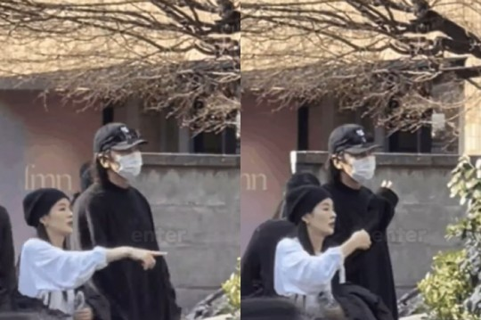
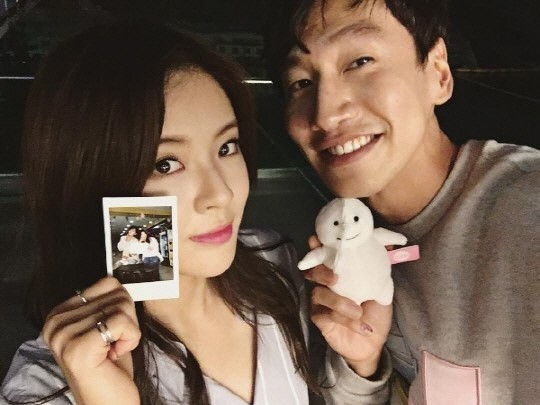

'7년 공개 연애' 이광수♥이선빈, 日여행 포착..얼굴 드러내고 '당당 데이트' [SC이슈]

[스포츠조선 조윤선 기자] 7년째 공개 연애 중인 배우 이광수,
이선빈이 일본에서 데이트를 즐겼다.
최근 SNS와 온라인 커뮤니티 등에는 일본 여행 중인 이광수, 이선빈의
영상이 공개됐다.
검은색 모자와 상의를 착용한 이광수는 마스크로 얼굴을 가렸지만,
190cm의 큰 키 때문에 멀리서도 눈에 띄는 존재감을 드러냈다.
이선빈은 모자는 썼지만 얼굴은 가리지 않은 채 자유롭게 거리를
걸었다.
두 사람은 주변의 시선은 크게 의식하지 않는 듯 나란히 거리를 걸으며
다정하게 이야기를 나누는 모습으로 눈길을 끌었다.
이광수와 이선빈은 2016년 SBS '런닝맨'에서 처음 만나 인연을
맺었다.
다른 예능 프로그램에 출연해 이광수를 이상형으로 꼽았던 이선빈이
'런닝맨'에 등장하면서 두 사람은 빠르게 핑크빛 기류를 형성했다.
이후 실제 커플로 발전한 두 사람은 2018년 12월 "만난 지 5개월
됐다"며 열애를 인정했다.

이광수와 이선빈은 열애를 공식 인정한 뒤 서로에 대한 애정을
당당하게 드러내며 연예계 대표 커플로 등극했다. 인터뷰를 통해
서로의 작품을 모니터링하는 이야기를 전하기도 하고, 생일에는 SNS에
'좋아요'를 누르며 조용한 '럽스타그램'을 이어가며 7년째 장수 커플로
많은 응원을 받고 있다. 한편 이광수는 새 드라마 '노 웨이 아웃'과
넷플릭스 시리즈 '악연'에 출연한다. 이선빈은 차기작으로 tvN 새
드라마 '감자연구소' 출연을 검토 중인 것으로 알려졌다.